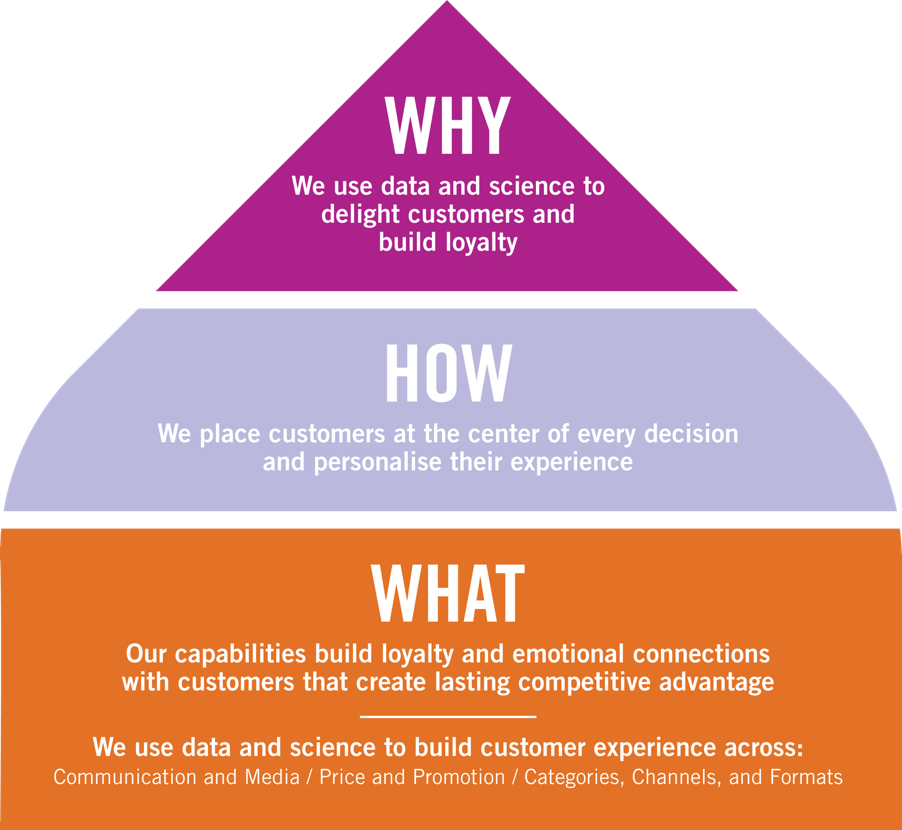
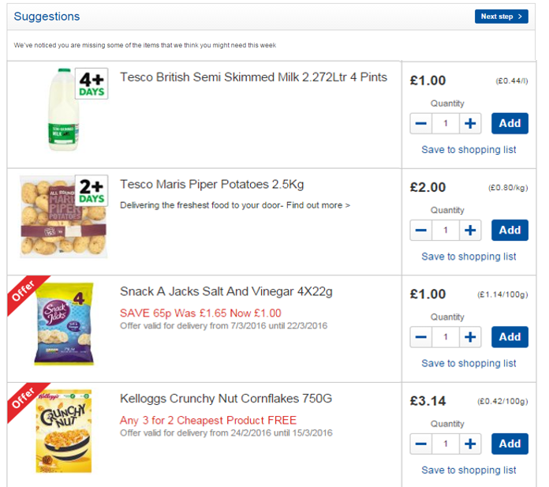
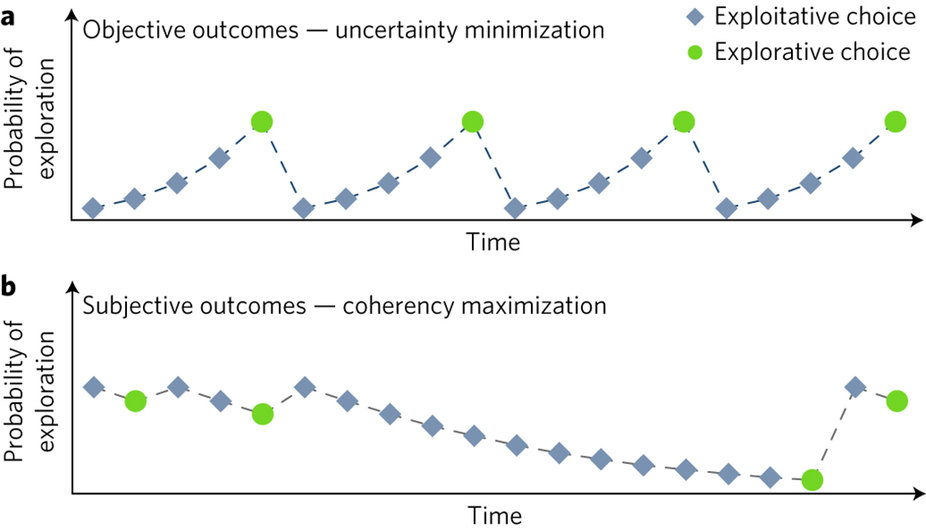
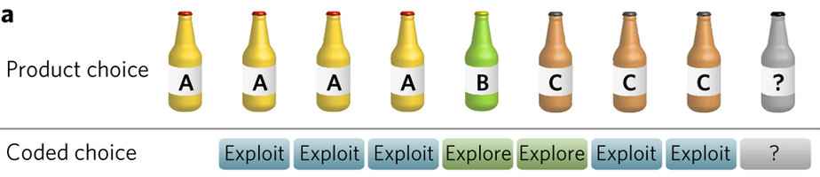
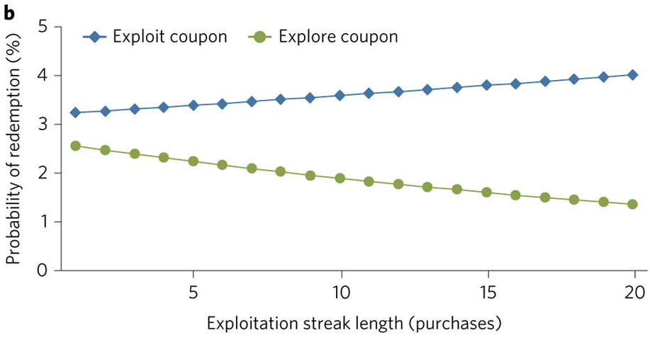

dunnhumby
(explained through 4 psychological principles)Adam Hornsby
Introductions
Who am I?
Lead Data Scientist @ dunnhumby (9.5 years)Experimental Psychology, Part-time PhD @ UCL (2016-22)
Psychology BSc, Graduate @ UCL (2010-2013)
You are what you buy, not what you say you buy
Attitudes are weak predictors of behaviour
Psychologists have known for a long time that attitudes are weak predictors of behaviour (e.g. LaPiere, 1934)
A great deal of market research is done by asking a small number of people what they think (e.g. focus groups)
This data is used to build profiles of customer segments and relevant marketing strategies
In the beginning
Edwina Dunn and Clive Humby formed dunnhumby in 1989
Their founding belief was that the best data on customers was already owned by businesses (e.g. EPOS data) (i.e. not necessarily attitudinal)
dunnhumby quickly became driving force behind the Tesco Clubcard
The power of tracking repeat purchases
Customers can exist in data thanks to their repeat purchases (e.g. using a Clubcard ID)
Understanding what customers like and don't like creates the marketing equivalent of a DNA profile
dunnhumby pitched this idea during a trial with Tesco...
"What scares me about this is that you know more about my customers after three months than I know after 30 years" Lord McLaurin, ex Chairman of Tesco
Helping (mostly) retail brands with data
Customers have needs and expect them to be met
Supermarkets cater to people's basic needs

Grocery retailers affect people's most fundamental needs (e.g. food, clothing, finances).
People have different needs and get frustrated if they're not met (Maslow, 1943)
"To succeed in business... you need to understand what your customers want" (Richard Branson)
One strategic decision can have a big impact on customers...
Too much choice can be overwhelming
We use machine learning to aid decision-making

Machine Learning algorithms sweep through enormous amounts of data, so that customers don't have to
We receive 1.45bn rows of transactional data every 4 weeks from one retailer (= lots of data)
Machine learning enables us to build personalisation algorithms that learn what individual customers like
This can be used to solve long tail problem, minimises irrelevant communications and ease complex decision-making
Case Study: Have you forgotten?
This algorithm recommends products that we think you've forgotten this week
It uses past shopping behaviour and relevancy scores to determine what has been forgotten and what has been intentionally left out
This simple feature aims to aid complex decision-making, so that it's less overwhelming
(Interestingly, people's propensity to use this feature depends on how they search for products, see Hornsby & Love, 2022, Science Advances
Subjective choices can be surprising
Why do you buy what you buy?

There are an infinite number of dimensions that people can use to value a product, and these dimensions vary in subjective importance
This contrasts with objective choice, where people can choose options based on a single criterion (e.g. price)
Understanding how customers make subjective choices is a big research topic at dunnhumby (e.g. several PhD sponsors)
This will help build better targeting algorithms, store layouts and simulations (amongst other things)
Research topic: Exploration patterns in the supermarket
In a recent research project, we tried to understand exploration patterns of products
When do people try different products (i.e. explore) and when do they try the same (i.e. exploit)?
Normative/objective theories of choice suggest that people's p(explore) should increase the more they exploit (i.e. maximising information)
But we know that determining value of subjective choices can be an interpretive exercise (e.g. Hall et al. 2010 jam tasting study)
So perhaps we will see a reversed trend, where p(explore) decreases with more exploitation (i.e. maximising coherency)
the study was conducted on 300k customers
Repeat purchases were coded as 'exploitations'
On historic data, results suggested that the probability of exploring new products was much higher for shorter exploitation streaks than expected
To validate these findings, explore/exploit coffee coupons were sent to customers with different streak lengths...
The coupon study confirmed that people were coherency maximising
Exploratory coupons were more likely to be redeemed when exploitation streaks were short
Suggests that preferences follow choices
We confirmed this in lab studies, reported in Hornsby & Love (2020b), Cognition
Results run contrary to normative models of choice; subjective choices can be suprising!
Conclusions
dunnhumby are a customer science company that help retailers & brands make sense of data+ Customers are best understood through their actions, not (always) their words
+ The most successful businesses understand their customers needs and can do this at scale with data
+ Data and data science is useful for building personalised relationships with customers
+ We are at the beginning of the journey in understanding customers
Thank You
adam.hornsby@dunnhumby.comanhornsby.github.io
Graduate scheme & more
https://www.dunnhumby.com/careers